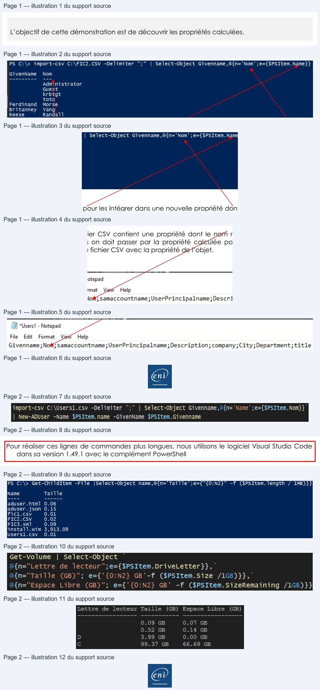

Transcription du document du Drive TSSR. La mise en forme est adaptée au Web ; les compléments IA du portail sont présentés séparément.
Initiation au Scripting avec PowerShell
Démonstration 13 du module 3
L’objectif de cette démonstration est de découvrir les propriétés calculées.
La modification d’une propriété peut être effectuée de plusieurs manières : soit par l’utilisation
d’une commande Set, soit par l’utilisation d’une variable intermédiaire. Dans certains cas, il va être
nécessaire de créer une propriété pour la durée d’une commande.
Comme la traduction du nom de la propriété ou la gestion des décimales, après l’exécution de la
commande la propriété ne sera plus accessible.
•
Les propriétés dites calculées servent très souvent pour traduire les noms des propriétés.
•
Dans un premier temps, on va créer une propriété, puis on va lui assigner les valeurs de la
propriété d’origine que l’on souhaite traduire.
On récupère les valeurs de la propriété Name pour les intégrer dans une nouvelle propriété dont le
label est Nom.
Cela va permettre de créer de nouvelles propriétés qui vont parfaitement correspondre aux
propriétés des objets à importer.
Si notre fichier CSV contient une propriété dont le nom ne correspond pas à une propriété de
l’objet, alors on doit passer par la propriété calculée pour faire correspondre les valeurs de la
propriété du fichier CSV avec la propriété de l’objet.
Page 1/2
© ENI – Tous droits réservés
PS C:\> import-csv C:\FIC2.CSV -Delimiter
";"
|
Select-Object Givenname,@{n='Nom';e={$PSItem.Name}}
GivenName
Nom
Administrator
Guest
krbtgt
toto
Ferdinand
Morse
Britanney
Yang
Reese
Randall
| *Users| - Notepad
File
Edit
Format
Wi
Help
Givenname
; No#G samaccountname;UserPrincipalname;
Description; company;City; Department; title
En
Initiation au Scripting avec PowerShell
Pour réaliser ces lignes de commandes plus longues, nous utilisons le logiciel Visual Studio Code
dans sa version 1.49.1 avec le complément PowerShell
La commande Select-Object permet de créer la propriété Name avec les valeurs du fichier CSV Nom puis de les envoyer dans la propriété Name de l’objet ADUser.
Une deuxième utilité des propriétés calculées est de permettre de modifier les valeurs de la
propriété.
On modifie le nombre de décimales, puis on divise la valeur de la propriété Length pour obtenir un résultat lisible.
Les propriétés calculées sont disponibles à plusieurs reprises dans une ligne de commande.
Nous avons traduit toutes les propriétés et transformé leurs valeurs dans un format plus lisible et
exportable.
Page 2/2
© ENI – Tous droits réservés
import-csv C:\Users1.csv -Delimiter
";"
| Select-Object Givenname,@fn=
"Name" ;e={$PSItem.Nom}}
| New-ADUser -Name $PSItem.name -GivenName $PSItem.Givenname
PS C:\> Get-ChildItem -File
|Select-Object name,@{n='Taille';e={"{O:N2}"
-f ($PSItem. length / 1MB)}}
Name
Taille
aduser.html
0.06
aduser.json 0.15
ficl.csv
0.01
FIC2.CSV
0.02
FIC3.xml
0.09
install.wim 3,913.09
Usersl.csv
0.01
Get-Volume
|
Select-Object
~
i{n="Lettre
de lecteur";e={$PSItem.DriveLetter}},
af{n="Taille
(GB)";
e={'{0:N2}
GB'-f
($PSItem.Size /1GB)}},
i{n="Espace
Libre
(GB)";
e={'{0:N2}
GB'
-f ($PSItem.SizeRemaining /1GB)}}
Lettre
de lecteur Taille
(GB)
Espace Libre
(GB)
